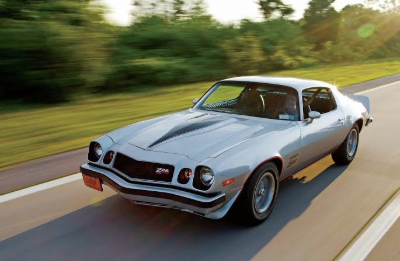
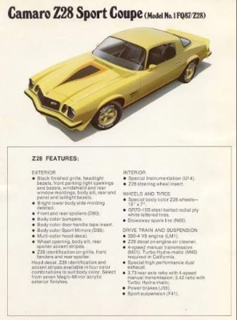

The 1977 Camaro

My Dream Car
The 1977 Camaro in my opinion is the greatest American muscle car ever made. This car is what boys dreams are made of.
The 1977 Chevrolet Camaro holds a special place in pony car history, marking the return of the iconic performance-focused Z28 model after a brief hiatus. Built on the second-generation platform, it featured signature long-hood, short-deck proportions, prominent safety bumpers, and distinct wrap-around rear glass. Though strict emissions regulations capped output from its 350 cubic-inch V8 engines—delivering a modest 185 horsepower on top-tier trims—the '77 Camaro prioritized handling, comfort, and bold street styling. It proved to be a massive commercial success for General Motors, surpassing 218,000 units sold and outselling the Ford Mustang for the very first time. Pop culture later cemented its legendary status when a yellow and black '77 Camaro starred as Bumblebee in the 2007 Transformers movie.

Model Specifications & Trims
| Trim Level | Standard Engine | Horsepower Output |
|---|---|---|
| Base Coupe | 250 cu in (4.1L) Inline-6 | 110 hp |
| Type LT | 305 cu in (5.0L) V8 | 145 hp |
| Rally Sport (RS) | 305 cu in (5.0L) V8 | 145 hp |
| Z28 Special | 350 cu in (5.7L) V8 | 185 hp |